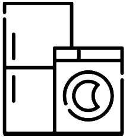

BitTech
Поможем в выборе бытовой техники

BitTech
Поможем в выборе бытовой техники лучшего качества
Бытовая техника — электрические механические
приборы, которые выполняют некоторые бытовые функции, такие как
приготовление пищи или чистка. Бытовые приборы могут быть разделены
на:
- Крупная бытовая техника
- Мелкая бытовая техника
- Бытовая электроника
Это деление также заметно в техническом обслуживании и ремонте этих
видов продукции. Бытовая электроника, как правило, требует высоких
технических знаний и навыков, в то время как крупная бытовая техника,
возможно, потребуется больше практических навыков и «грубой силы»,
чтобы управлять устройствами и тяжёлыми инструментами, необходимыми
для их ремонта.
Виды мультимедиа и их разрешения
| Техника |
Потребление энергии |
| Стиральная машина |
2 КВт/час |
| Утюг |
от 1,5 до 2,5 кВт/ч |
| Посудомойка |
1 761 – 2 200 Вт |
| Блендер |
от 1000 Вт. |